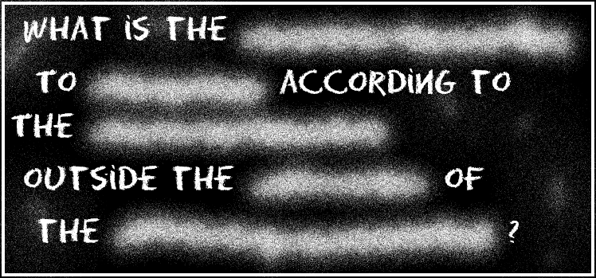

Recruitment Test
Step #1 - FIND THE HIDDEN WEBPAGE
Status: COMPLETE
Congratulations! You have found the hidden page of the website, succeeding in the first step of our recruitment test. But don't pat yourself on the back just yet: this was the easiest part, by far. Things are going to get tougher from here on in, a lot tougher.
Second Sparks only hires the very best investigators so we want to make sure you are worthy of carrying the Second Sparks badge.

Step #2 - SOLVE THE CLUES TO COMPLETE THE QUESTION
Status: IN PROGRESS

Every week for 5 weeks you will receive a postcard with an encrypted clue. Once decrypted, each clue will give you words to replace one of the empty spaces in the sentence on the black board.
Once the question is complete, the you will need to use an internet browser to find the answer.
You can type the missing words on the blackboard (use either lowercase or uppercase letters) then click the button to check your answers: green means the word is correct!
If you need help, use the button to get hints.
Step #3 - FIND THE ANSWER TO THE QUESTION
and receive your reward
When you think you have found the answser to the question, send an email to our CEO with the subject line of the email containing the answer you found and your name.
If the answer is correct, you will be formally hired as one of our Second Sparks and you will receive a badge and a contract.
If the answer is incorrect, don't worry: a good investigator knows they will get it wrong sometimes and are willing to backtrack and try again. You can send your answer more than once!